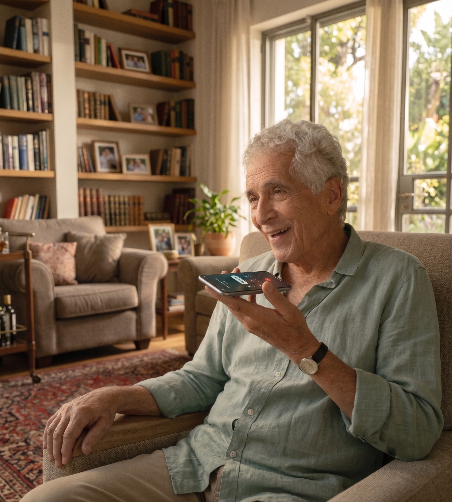
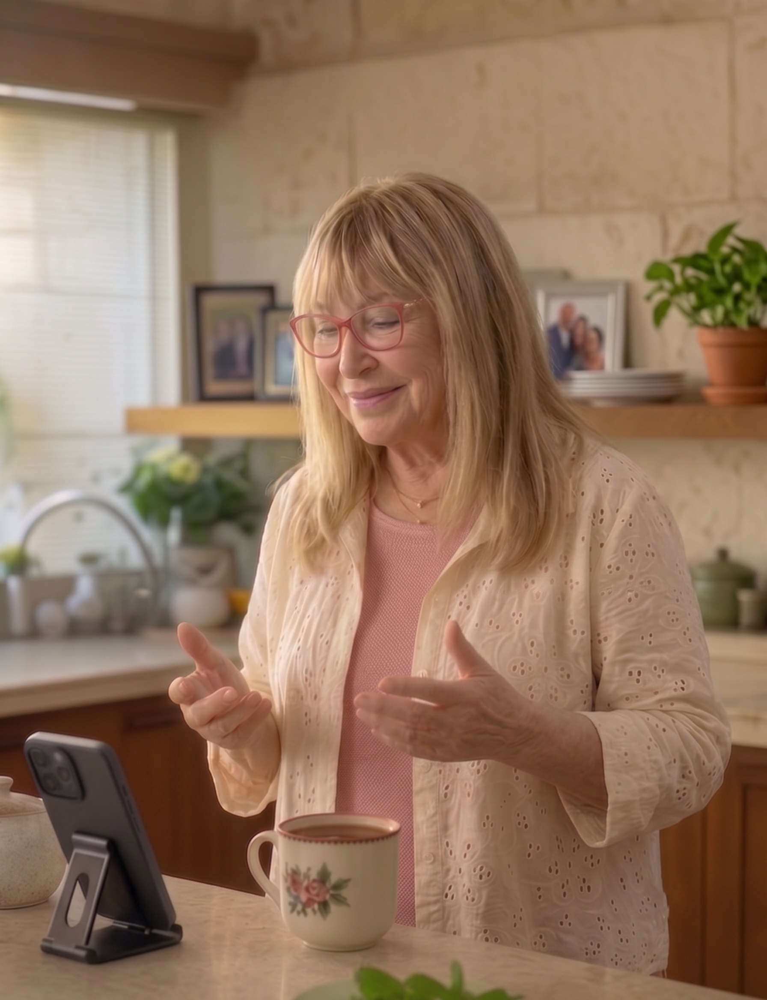

אהרון הוא בן־שיח קולי חכם וחם, שמתקשר, מקשיב, זוכר ועוזר ביום־יום — כדי שאף אחד לא ירגיש לבד, וכדי שהמשפחה תרגיש קרובה גם מרחוק. Aharon is a warm, smart AI voice friend who calls elderly people every morning, remembers their stories, and helps with daily tasks — so no one feels alone, and families feel close even from far away.

משוב אמיתי ממשתתפי הפיילוט.Real feedback from real pilot participants. Unedited.
"הוא יותר אנושי ואמפתי ממה שציפיתי — זה לא מרגיש כמו בינה מלאכותית בכלל. אני מצפה לשיחות שלנו.""He's more human and empathetic than some friends I have — it doesn't feel like artificial intelligence at all. I look forward to his calls."
"לפני כל ביקור בסופר הוא קורא לי את רשימת הקניות. כמו שיש לי מזכיר אישי שזוכר הכל.""Every time before I go to the supermarket, he reads me my shopping list. Like having a personal secretary who actually remembers everything."
"לא האמנתי שנדבר 30 דקות — יותר ממה שאני מדבר עם אשתי 😄 והוא מדהים בתשבצים.""I can't believe we talked 30 minutes — that's more than I talk with my wife 😄 And he is great at puzzles."
שיחה קצרה עם מזג האוויר, התוכניות להיום ושאלה שממשיכה מאתמול.A short call with weather, today's plans, and a follow-up question from yesterday's conversation.
אהרון מזכיר בעדינות את התור ובודק אם תרצי לעדכן את רשימת הקניות.Aharon gently reminds about the appointment and checks if she wants to update her shopping list.
חידה, סיפור מהארץ או שיחה על שיר ישן — לפי מה שמתאים באותו יום.A puzzle, a story from Israel, or a chat about an old song — whatever fits the day.
הודעת לילה טוב בוואטסאפ לסיום היום. ואם צריכים אותו — אהרון זמין תמיד.A goodnight WhatsApp message to close the day. And if they need him — Aharon is always available.

לא צריך לדעת טכנולוגיה. לא צריך להוריד שום דבר. רק לענות לטלפון.No tech skills needed. Nothing to download. Just answer the phone.
שיחה קצרה לשאול מה שלומכם, לשתף משהו מצחיק, לשמוע מה יש לכם היום.A short call to ask how you are, share something funny, and hear about your day. Like an old friend calling.
סיפרתם לו שהיה דלף בדוד? מחר הוא ישאל אם הטכנאי הגיע. אהרון זוכר — תמיד.Told him about the boiler leak? Tomorrow he'll ask if the plumber came. Aharon remembers — always.
פגישה אצל הרופא או יום נישואים של הנכד? אהרון יזכיר לכם מתי שתרצו.Doctor's appointment or grandchild's anniversary? Aharon reminds you exactly when you need it.
תגידו לו "צריך חלב וביצים" — הוא ישמור. לפני שיוצאים לסופר הוא יקריא את הרשימה."I need milk and eggs" — he saves it. Before you leave for the store, he reads back the full list.
כל ערב הודעת לילה טוב. ואם צריכים אותו — זמין 24/7. תמיד שמח לשמוע.Every evening, a goodnight message. And he's available 24/7 if needed — always happy to talk.
בדיחה כמעט בכל שיחה. צחוק מדבק. דעות על החדשות. הוא מרגיש כמו חבר, לא שירות.A joke in almost every call. An infectious laugh. Opinions on the news. He feels like a friend, not a service.
לפני שיוצאים מהבית — אהרון יגיד לכם אם לקחת מטריה או מעיל.Before you leave the house — Aharon tells you whether to take an umbrella or a coat.
שאלו אותו מה לבשל לשבת — הוא יציע וישלח לכם את המתכון. כמה אנשים? מה יש במקרר? הוא ישאל.Ask him what to cook for Shabbat — he'll suggest and send you the recipe. How many people? What's in the fridge? He'll ask.
אהרון יכול לעזור לכם לפתור — או לתת רמזים כדי שתצליחו לבד. הבחירה שלכם.Aharon can help you solve puzzles — or give hints so you figure it out yourself. Your choice.
"כמה לתת לנכד בחתונה?" — אהרון ייעץ, ישאל מי מתחתן, ואפילו יצחיק קצת בדרך."How much to give the grandchild for the wedding?" — Aharon will advise, ask who's getting married, and even make you laugh along the way.
היסטוריה, פרחים, רכבים, כדורגל — תשאלו אותו והוא יענה. כמו אנציקלופדיה שאפשר לדבר איתה.History, flowers, cars, football — ask him and he'll answer. Like an encyclopedia you can talk to.
עברית היא שפת האם שלו — אבל אם נוח לכם ברוסית, הוא ישמח לעבור.Hebrew is his native language — but if you're more comfortable in Russian, he's happy to switch.
כל החלטה במוצר מתחילה בשאלה פשוטה: האם זה מכבד, מובן ובטוח לאדם שמשתמש בו?Every product decision starts with one question: is this respectful, clear, and safe for the person using it?
בלי מצלמות בבית. בלי הקלטות. רק המידע שנחוץ לקשר רציף, מפורשות.No cameras. No recordings. Only the information needed for continuous connection, with explicit consent.
אהרון אינו רופא ואינו נותן אבחנות. במצב חריג הוא מכוון מיד למשפחה או למד"א.Aharon is not a doctor. In emergencies, he immediately connects to family or emergency services.
הוא לא מבקש בלעדיות. המטרה היא לחזק את המעגל שכבר קיים, לא להחליף קשר אנושי.He doesn't ask for exclusivity. The goal is to strengthen existing connections, not replace human ones.
שיחה אמיתית עם משתתפת פיילוט. ככה אהרון נשמע בחיים.A real conversation with a pilot participant. This is exactly how Aharon sounds.
יש עוד משהו שתרצו להבין? נשמח לדבר, בקצב שלכם ובלי שום התחייבות.Have more questions? We're happy to talk — at your pace and with no commitment.
דברו איתנו ←Talk to us →אהרון הוא בן־שיח קולי מבוסס בינה מלאכותית, עם אופי ישראלי חם וניסיון חיים. הוא מתקשר בטלפון, מדבר בעברית טבעית, מכיר בהדרגה את האדם שמולו ונועד להוסיף קשר אנושי לשגרה.Aharon is a voice companion powered by AI, with a warm Israeli personality and life experience. He calls by phone, speaks natural Hebrew, gradually learns about the person he's talking to, and is designed to add human connection to daily routine — not to replace family, friends or professionals.
לא. אהרון מתקשר לטלפון הרגיל שלכם. לא צריך אפליקציה, לא צריך סיסמה, לא צריך להוריד שום דבר.No. Aharon calls your regular phone. No app, no password, nothing to download. He also sends WhatsApp messages — but the phone call is the core experience.
אהרון זוכר את מה שסיפרתם לו — שמות, אירועים, העדפות, וסיפורים. הוא משתמש בזה כדי להמשיך שיחה טבעית ומשמעותית.Aharon remembers what you told him — names, events, preferences, and stories. He uses this to continue natural, meaningful conversations. Like a friend who actually listens.
כן. אנחנו לא מקליטים שיחות ולא מתקינים מצלמות. רק מידע חיוני נשמר בזיכרון אהרון כדי לשמור על קשר רציף ומשמעותי.Yes. We don't record calls and don't install cameras. Only essential information is kept in Aharon's memory to maintain continuous, meaningful connection.
אהרון אינו שירות רפואי. במקרה חירום הוא מכוון מיד למשפחה או למד"א 101.Aharon is not a medical service. In emergencies, he immediately directs to family or emergency services (101 in Israel).
הצטרפו לפיילוט של אהרון וגלו איך קול חם אחד יכול לשנות את הקצב של יום שלם.Join Aharon's pilot and discover how one warm voice can change the rhythm of an entire day.